RUNUTS 레벨 제작 절차와 제작 기록
2026-09-28 기록 기준 · 제작 절차 3.3.0
1. 현재 제작 절차 — 전체 흐름
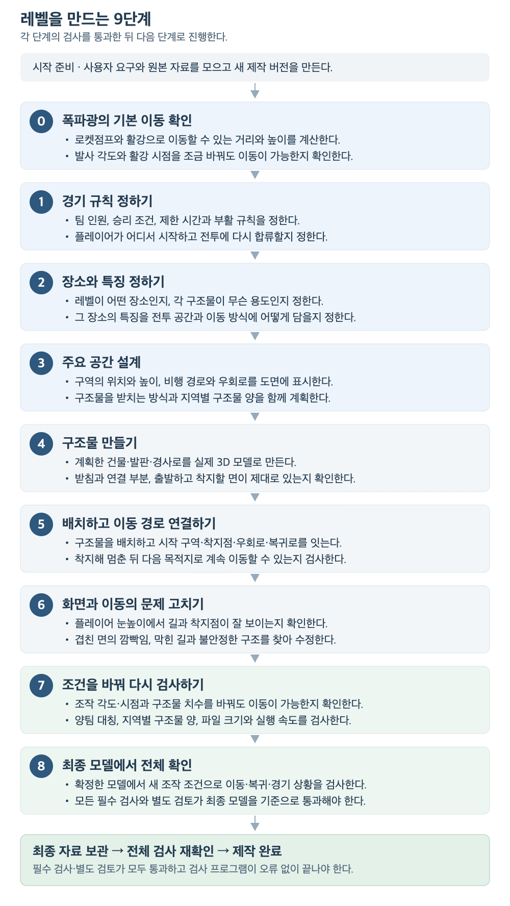
각 단계의 검사와 수정
- 검사할 자료와 모델 버전을 정하고, 제작자와 다른 AI가 검토한다.
- 통과하면 다음 단계로 진행. 검사를 하지 않았거나 근거가 부족하면 ‘확인 필요’로 두고 보완한다.
- 문제가 있으면 원인이 생긴 단계부터 수정. 수정 전 기록을 보존하고, 수정의 영향을 받는 검사를 다시 한다.
2. 제작 절차 상세 설명
2.1 역할과 결과물
- 제작 담당 AI: 요구 정리, 설계, 3D 모델 제작, 문제 수정, 결과 취합.
- 검토 담당 AI: 제작자와 별도로 이동, 구조, 공간 구성 검사.
- 공통 관리 도구: 제작 버전, 검사 자료, 수정 이력, 최종 완료 상태 관리.
- 제작 결과물: 편집용 모델, 전달용 모델, 충돌 검사 자료, 화면 캡처.
- 자료 일치 확인: 설계 문서·이동 계산·화면 보기 도구가 같은 모델을 사용했는지 확인. 제작 버전과 파일 내용 확인값으로 구별한다.
2.2 단계별 작업과 통과 조건
0. 폭파광의 기본 이동 확인
- 작업: 제공된 폭파광 수치로 로켓점프, 활강, 두 동작을 결합한 비행 계산.
- 통과 기준: 계산이 안정적이고 조작이 조금 달라도 허용 범위 안에서 이동 가능. 출발·도착 위치와 속도 확인. 레벨에 맞추려고 캐릭터의 기본 이동 수치를 바꾸지 않음.
1. 경기 규칙 정하기
- 작업: 팀 인원, 승리·점수 조건, 시작 위치, 부활과 전투 복귀 규칙 결정.
- 통과 기준: 필요한 규칙이 빠지거나 서로 충돌하지 않음. 과거 레벨의 경기 규칙을 새 레벨에 자동 적용하지 않음.
2. 장소와 특징 정하기
- 작업: 장소의 용도, 구조물의 기능, 전투 역할과 생김새 결정.
- 통과 기준: 공식 설정과 새 제안을 구분. 이름과 색상뿐 아니라 공간 구성과 이동 방식에서도 장소의 차이를 설명할 수 있음.
3. 주요 공간 설계
- 작업: 구역의 위치·높이, 비행 경로, 받침과 연결 부분, 지역별 구조물 양 계획.
- 통과 기준: 실제 치수가 있는 도면으로 배치 이유, 지지 구조, 면 겹침 방지, 이동 선택지와 공간의 풍부함 확인.
- 제작 순서: 이 단계가 통과하기 전에는 계획 검토용 도면·단순 모델만 사용. 최종 구조물 제작과 배치는 이후에 진행.
4. 구조물 만들기
- 작업: 주요·보조 구조물의 3D 모델과 충돌 검사에 쓸 형태 제작.
- 통과 기준: 구조물의 기능이 형태에서 드러나고 받침과 연결 부분이 실제로 존재. 출발·착지에 쓸 면과 다양한 지형 확인.
5. 배치하고 이동 경로 연결하기
- 작업: 구조물 배치. 시작 구역, 착지점, 우회로, 복귀로와 외벽 구성.
- 통과 기준: 착지해 멈춘 뒤 다음 이동으로 연결 가능. 실제 배치가 계획한 장소 기능과 접근 방법에 맞음.
6. 화면과 이동의 문제 고치기
- 작업: 플레이어 눈높이와 카메라를 움직이는 화면에서 길·착지점의 식별, 이동 안정성, 경기 규칙과의 일치 확인.
- 통과 기준: 겹친 면의 깜빡임, 막힌 길, 불안정한 구조와 배치 문제 해결. 문제가 시작된 단계로 돌아가 수정.
7. 조건을 바꿔 다시 검사하기
- 작업: 조작 각도·시점과 치수를 바꿔 검사. 양팀 대칭, 지역별 구조물 양, 파일 크기와 실행 성능 확인.
- 통과 기준: 정해 둔 변화 범위에서도 이동·품질·탐색·구조물 양 유지. 전체 평균과 별개로 각 지역도 기준 충족.
8. 최종 모델에서 전체 확인
- 작업: 확정한 최종 모델에서 별도 조작값으로 이동·복귀·경기 상황 재검사.
- 통과 기준: 모든 필수 검사와 독립 검토 통과. 검사에 사용한 자료와 최종 모델의 일치 확인.
필수 확인 항목은 총 67개: 내용 검사 58개 + 단계별 독립 검토 9개. 이동 시험 횟수나 품질 점수를 뜻하지 않는다.
2.3 동선 검증에 사용한 캐릭터: 폭파광
- 기준 캐릭터: 폭파광. 제공받은 로켓점프·활강 수치 사용.
- 검사 범위: 출발 → 비행 → 착지 → 정지 → 다음 이동으로 연결.
- 계산 조건: 제공되지 않은 중력·착지·정지 계산의 일부 조건에는 가정 사용.
- 캡처의 의미: 저장된 계산 경로를 레벨에 표시한 화면. 실제 게임에서 조작한 플레이 기록은 별도 확인 필요.
| 적용한 수치 | 값 | 쓰임 |
|---|---|---|
| 로켓 발사 반동으로 더해지는 속도 | 30m/s | 점프 출발 시 반동 계산 |
| 활강 중 목표 이동 속도 | 10m/s | 활강 중 이 속도에 가까워지도록 계산 |
| 활강 전 최소 대기 | 1초 | 출발 직후 바로 활강하지 않도록 하는 공통 조건 |
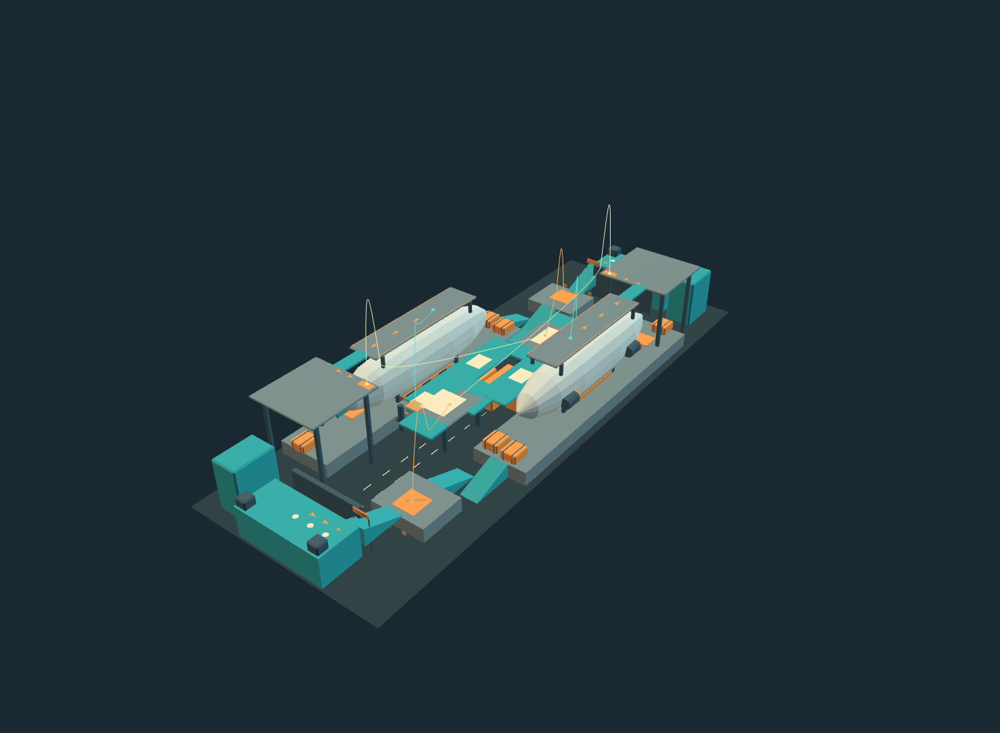
SKY CARGO r02의 보관된 모델과 계산 경로를 다시 열어 캡처. 외벽을 숨겨 경로를 표시했다. 점은 출발·도착 위치다.
| 경로 색상 | 이동 구간 | 출발 → 도착 높이 | 비행 시간 |
|---|---|---|---|
| 주황색 | 준비장 → 중층 | 6m → 13m | 약 6.27초 |
| 청록색 | 중층 → 상층 | 13m → 34m | 약 6.40초 |
| 연노란색 | 상층 → 상대 중층 | 34m → 13m | 약 14.98초 |
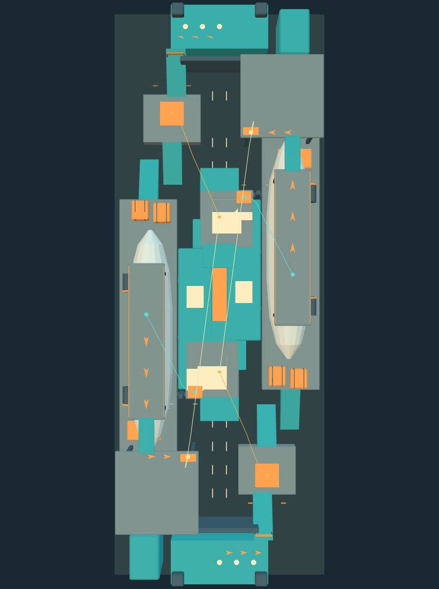
위에서 본 같은 경로. 양팀 각각 3개, 총 6개 비행 경로가 표시되어 있다. 높이 차이는 앞의 전체 모습과 함께 확인한다.
- 기록상 결과: 위 6개 경로는 당시 기본 조작 조건에서 통과.
- 기록 보존: 캡처를 위해 과거 검사를 다시 실행하거나 판정을 바꾸지 않음.
- 별도 문제: 이후 지적된 SKY CARGO r02의 구조·표면 문제는 4.2절에 정리.
2.4 모델을 만들기 전에 확인할 세 가지
① 그 위치에 필요한 이유
- 장소의 기능과 전투 역할, 위치·높이·방향의 이유 결정.
- 접근 방법과 다른 배치안 비교.
- 이동 거리나 밀도 숫자만 맞추려는 임의 발판은 제외.
② 구조물을 받치는 방식
- 무게가 받침과 연결 부분을 거쳐 바닥이나 선체로 전달되는지 확인.
- 공중에 뜬 구조라면 부양 원리와 표현 방법을 처음부터 계획.
- 제작 후 발견한 결함을 설정으로 덮지 않음.
③ 겹친 면과 화면 깜빡임 방지
- 구조물이 만나는 부분에서 화면에 보여 줄 표면 결정.
- 같은 위치에 겹친 면, 들뜬 표식, 서로 뚫고 들어가는 부분 제거.
- 카메라를 움직여 깜빡임·줄무늬 확인. 정지 캡처나 이동 검사만으로 대체하지 않음.
2.5 이동 선택지와 구조물 양 유지
이동 선택지 확인
- 실제로 서 있을 수 있는 면, 지역별 출구, 시야를 가리는 구조와 경사 측정.
- 주요 지점에서 서로 다른 목적지로 비행할 수 있는지 확인.
- 경로 사이의 간격, 착지·정지 후 다음 이동, 복귀와 재합류 검사.
- 모든 플레이어가 반드시 통과하는 좁은 구간 확인.
- 보행 출구의 시작·도착 위치 대조. 0.1m 간격으로 바닥 지지와 몸체 충돌 검사.
구조물 양 비교
- 기준: SKY CARGO r02의 여러 높이층과 지역별 풍부함.
- 참고 수치: 표식을 제외한 내부 모델 조각 133개, 주요 발판 높이 6·13·34m, 지역·높이별 밀도 9구간.
- 적용 방법: 새 장소에서 비교할 구역·높이와 허용 차이를 먼저 결정. 모델 조각 133개는 비교용 수치이며 독립 구조물 개수 목표가 아님.
- 수정 방향: 문제가 있는 구조도 기능과 풍부함을 유지하며 재설계. 비행선 소재나 기존 결함까지 가져오지 않음.
2.6 누가 검사하는가
- 제작 담당: 요구·기준 정리, 설계·제작, 검사 배정, 버전 관리, 수정과 결과 취합.
- 이동·탐색 검토 담당: 기본 이동, 비행, 착지·정지, 다음 이동, 탐색·복귀 확인.
- 구조·표면 검토 담당: 받침, 연결 부분, 무게를 받치는 방식과 실제 화면 확인.
- 설계·구성 검토 담당: 경기 규칙, 장소 특징, 배치 이유, 길의 식별, 구조물 양과 성능 확인.
검토 기록
- 제작자와 다른 AI가 담당. 같은 단계의 검토 역할도 서로 다른 AI에 배정.
- 검토자는 제작 파일을 수정하거나 다른 AI에 재위임하지 않음.
- 단계마다 필요한 역할만 배정. 여러 검토자가 차례로 검사하는 방식도 가능.
- 담당자, 검사 범위, 사용 자료, 앞단계와의 연결, 실행 기록 보관.
2.7 상태와 완료 판단
| 표시 | 뜻 |
|---|---|
| 통과 | 해당 자료와 버전에서 검사 기준 충족 |
| 기준 미달 | 문제가 확인되어 수정 필요 |
| 확인 필요 | 검사 전, 근거 부족 또는 기준 미결정 |
| 다시 검사 필요 | 자료·버전 변경으로 이전 결과를 그대로 사용할 수 없음 |
| 앞단계 통과 대기 | 앞단계가 끝나지 않아 다음 결과 확정 불가 |
수정 범위
- 계획, 개별 구조물, 배치, 최종 모델의 버전을 각각 관리.
- 계획·배치에 영향 없는 작은 표면 수정은 6단계부터 재검사 가능.
- 위치·치수·받침·경로의 의미가 바뀌면 해당 원인 단계부터 재검사.
- 완료된 제작본을 고칠 때는 원본을 보존하고 새 버전에서 진행.
최종 완료 조건
- 모든 단계의 필수 검사와 독립 검토 통과.
- 검사에 사용한 자료와 결과를 최종 보관.
- 최신 전체 검사에서 자료·도구·결과가 일치하는지 재확인.
- 검사 프로그램이 오류 없이 끝난 것을 확인한 뒤 완료 처리.
2.8 기록을 읽을 때의 기준
- 확인 자료: 저장된 설계, 프로그램, 검사 결과와 캡처.
- ‘당시 통과’의 범위: 그때의 이동 계산과 이 컴퓨터의 화면 보기 환경.
- 별도 확인 필요: 최신 절차 전체 통과 여부, 실제 6인 경기의 균형·재미, Unity·Quest 실행 결과.
- 과거 결과 보존: 문서 편집 중 레벨 검사를 다시 실행하거나 완료 상태를 변경하지 않음.
3. 제작 기록 — 범위와 상태
- 범위: 5개 장소 구상, 11개 제작 버전.
- 자료: 3D 캡처 7개 버전, 계획 도면 2개 버전, 문서만 있는 초기안 2개 버전.
- 버전 표기: r01은 1차 제작본, r02는 같은 레벨의 2차 제작본.
- 정리 순서: 장소별·버전별 분류. 서로 다른 장소의 정확한 제작 시간순은 아님.
| 장소 구상 | 제작 버전 | 남아 있는 자료 | 기록상 상태와 주의점 |
|---|---|---|---|
| SKY CARGO | r01 | 3D 모델·화면 이미지·이동 진단 | 검토본. 경로 진단 실패와 아직 정하지 않은 항목이 있다. |
| SKY CARGO | r02 | 3D 모델·화면 이미지·배포본·최종 보고서 | 당시 범위 통과. 이후 사용자 지적 3건이 별도 기록됐다. |
| VOLCANIC BASIN | r01 | 장소 구상·경기 규칙 문서 | 초기안. 모델·캡처 없음. |
| VOLCANIC BASIN | r02 | 장소 구상·경기 규칙·사용자 명령 | 경기 규칙 구체화안. 모델·캡처 없음. |
| VOLCANIC BASIN | r03 | 3D 모델·화면 이미지·배포본·최종 보고서 | 제작 절차 2.2.0 당시 범위 통과. 이후 탐색 기준 재평가는 기준 미달. |
| VOLCANIC BASIN | r04 | 3D 모델·화면 이미지·배포본·전체 검사 기록 | 제작 절차 3.0.0 당시 범위 통과. 이 기록만으로 최신 기준도 통과했다고 보지 않는다. |
| TIDAL OBSERVATORY | r01 | 3D 모델·화면 이미지·부분 검사 | 일부 검사는 통과했으나 전체 진행 상태는 확인 필요. 최종 완료 근거 아직 확인하지 못함. |
| TRAM EXCHANGE | r01 | 계획 도면·장애물 없는 비행 계산 | 경기 규칙이 정해지지 않은 계획안. 최종 모델 없음. |
| TRAM EXCHANGE | r02 | 확장 계획·비교 도면 | 용도가 있는 공간 8→16개 초안. 최종 모델 없음. |
| TRAM EXCHANGE | r03 | 3D 검토용 단순 모델·화면 이미지·탐색 진단 | 계획 검토 확인 필요. 탐색 기준 미달 및 검사마다 사용한 모델이 다른 기록이 있다. |
| VOLCANIC FORGE | r01 | 초안 화면 이미지·진단·독립 검토 | 제작 절차 3.3.0 진행 중. 미완료. |
- 레벨 캡처: 기존 파일 사용. 폭파광 동선 2장은 보관된 모델·경로를 다시 열어 촬영.
- 도시 계획 도면: 공간 배치와 치수를 유지하고 표시 문구만 쉽게 수정.
- 이미지 범위: 전체 형태를 보여 주는 자료. 특정 결함 위치나 현재 플레이 가능성을 입증하는 자료는 아님.
- 문제의 출처: 사용자 지적, 검사에서 발견한 문제, 아직 검사하지 않은 항목으로 구분.
4. SKY CARGO — 비행선 정비 도크
4.1 r01 · 초기 3D 검토본
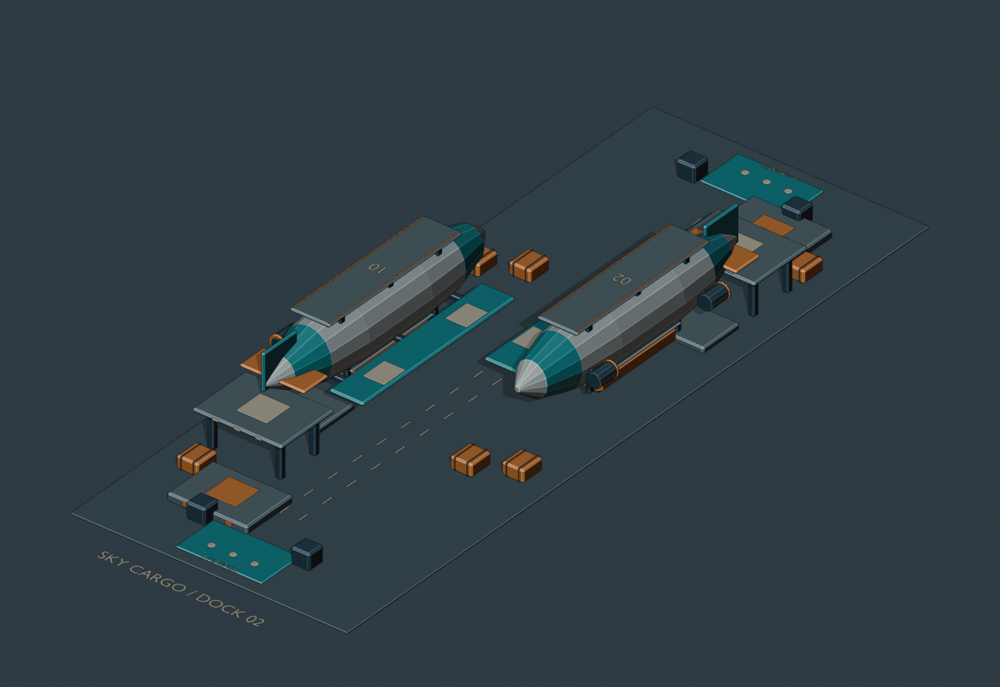
내부 확인을 위해 외벽을 숨긴 기존 검토 화면 이미지다.
- 구성: 두 비행선의 위쪽 갑판, 측면 바닥, 선체 아래에 매달린 공간을 전투 지형으로 사용.
- 상태: 형태의 대칭은 확인. 이동 경로는 진단 단계.
지적된 문제와 처리 상황
검사 발견: 검토안 비행 경로 5개 모두 진단 기준 미달. 장애물과의 최소 거리는 약 0.009~2.700m로 5m 목표에 미달했다.
수정·남은 일: 이 검사는 발을 디딜 면을 전 경로에서 제외한 단순 표면거리 진단이다. 정밀 비행 검사 통과 근거로 사용할 수 없다.검사 발견: 상층→상대편 경로의 끝점 오차가 약 10.83m였다.
수정·남은 일: 착지 목표나 활강을 시작하는 시점 재설계가 필요하다고 기록됐다.검사 발견: 꼬리날개·선체·외벽이 발사와 실패 후 돌아오는 길에 가까웠다.
수정·남은 일: 꼬리 모양과 발사·착지 위치 조정이 다음 수정으로 제시됐다.검사 미완료: 세부 경기 규칙, 배율, 충돌 검사에 쓸 캐릭터 크기, 착지·정지, 연속 이동, 조작값의 차이, 지역 밀도·성능.
수정·남은 일: r01은 완료본으로 취급하지 않는다.
4.2 r02 · 다층 구성을 확장한 제작본
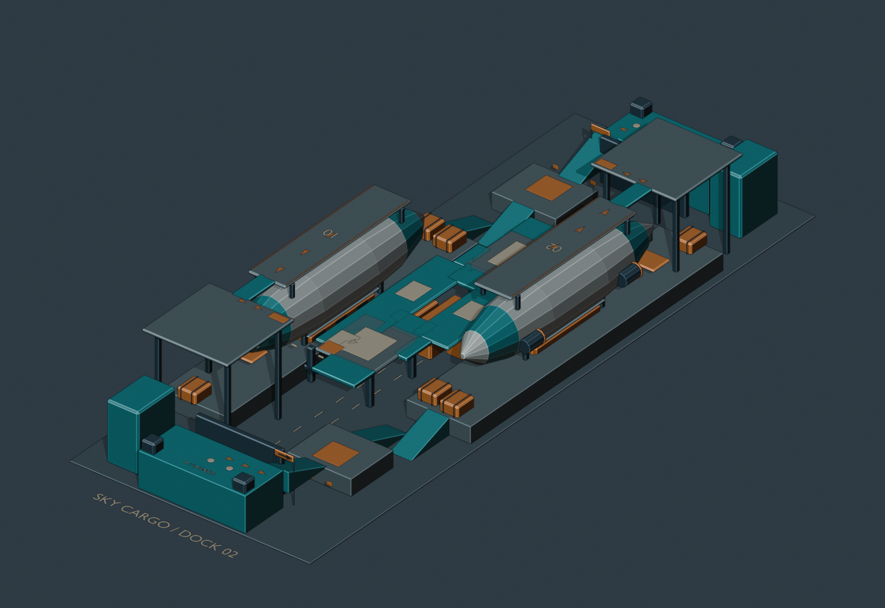
r01보다 확장된 착지망·준비장·상층 구성을 확인할 수 있다. 이 이미지에 사용자 지적의 정확한 발생 위치가 지정된 것은 아니다.
- 경기 규칙: 3대3 섬멸전, 라운드 중 부활 없음, 3선승, 180초.
- 높이 구성: 준비장 6m → 중층 13m → 상층 34m.
- 당시 결과: 필수 이동·파일 크기·이 컴퓨터의 실행 성능 검사 통과. 비행 주변 빈 공간의 최소 반경은 5.788m로 보고.
지적된 문제와 처리 상황
사용자 지적: 겹친 면 때문에 화면이 깜빡인다.
수정·남은 일: 후속 제작에서는 보여 줄 면을 정하고 겹친 면을 없앤 뒤, 카메라를 움직여 화면을 확인하도록 했다. r02의 특정 위치 조사·수정 완료 기록은 없다.사용자 지적: 실제로 서 있기 어려워 보이는 구조물 형태가 있다.
수정·남은 일: 생성 전 받침·연결 부분·무게를 받치는 구조와 생성 후 실제 모델 형태 검토가 필수가 됐다. 원본 r02는 보존됐다.사용자 지적: 일부 구조물이 왜 그 위치와 형태로 만들어졌는지 납득하기 어렵다.
수정·남은 일: 장소 기능·전투 역할·위치 이유·대안을 생성 전에 계획하고 검증하도록 절차를 강화했다.목표 미달: 비행 중 주변 10m의 빈 공간 목표를 모든 구간에서 달성하지 못했다.
수정·남은 일: 당시 필수 5m 통과와 분리해 기록했다.제작 중 수정: 중앙 화물 높이 변화가 밀도 구간 기준을 넘었다.
수정·남은 일: 높이를 7.6m로 낮추고 재검사한 기록을 보존했다.
후속 반영: 수치 검사와 별도로 표면·지지 구조·배치 이유 검토 강화. r02의 구조물 양과 여러 높이층은 후속 맵의 비교 기준으로 채택. 위 결함의 수정 완료는 확인되지 않음.
5. VOLCANIC BASIN — 화산 분지
5.1 r01·r02 · 문서 단계
- 남은 자료: 장소 구상·경기 규칙 문서.
- 캡처: r01·r02 모두 생성 모델과 화면 이미지가 확인되지 않음.
r01
- 당시 미결정: 팀 인원, 점수를 얻는 조건, 제한 시간, 부활 위치·지연·보호를 아직 정하지 않았다. 치수와 구조 계획도 미완료.
- 후속 변화: r02에서 3대3, 상대 처치당 1점, 20처치 선취, 양끝 부활 위치를 사용자 확정 규칙으로 기록했다.
r02
- 당시 미결정: 제한 시간, 부활 지연·보호, 실제 부활 지점을 아직 정하지 않았다.
- 후속 변화: r03에서 시간 제한 없음, 사망 3초 후 부활, 2초 보호·공격 시 해제 규칙과 모델 형태를 구체화했다.
5.2 r03 · 바위 지형과 계단형 평지를 사용한 제작본
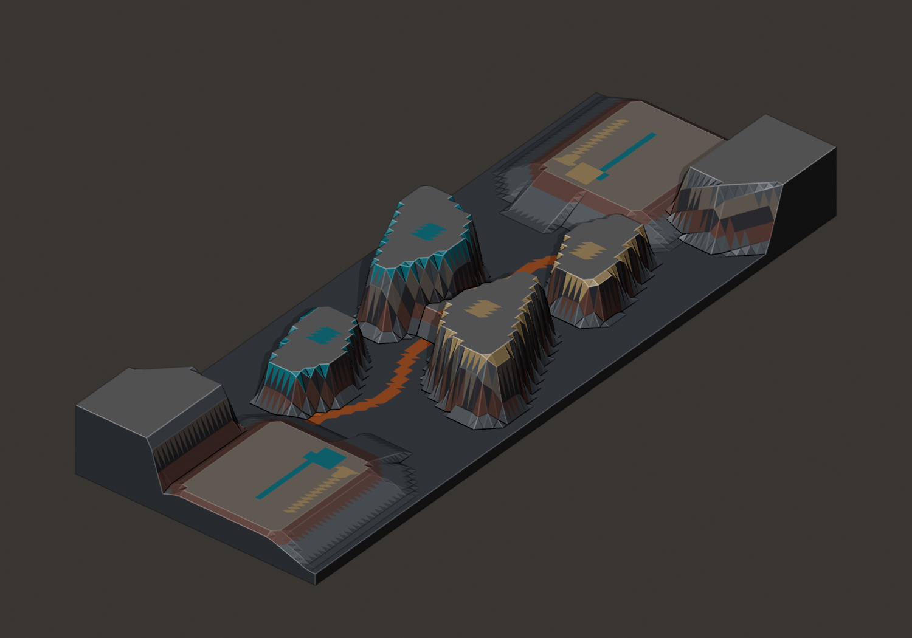
당시 최종 보고서에 연결된 보관된 화면 이미지다.
- 구성: 이어진 바위가 받치는 계단형 평지와 길게 솟은 지형.
- 당시 결과: 제작 절차 2.2.0에서 비행 10경로와 품질 검사 통과 보고.
- 후속 평가: 새 탐색 기준에서 갈림길과 복귀 경로 부족 확인.
지적된 문제와 처리 상황
제작 중 검사: 초기 준비장 높이 4m에서 바닥 여유가 4.376m에 그쳤다. 짧은 대각 하강도 자기 팀 쪽 높은 바위에 너무 가까이 다가갔다.
수정·남은 일: 준비장을 6m로 올리고 하강 출구·연결 방식을 재설계했다.제작 중 검사: 넓은 중앙 바위가 지역을 너무 많이 차지했고, 시작 구역의 중간 높이에서 몸을 숨길 구조물가 부족했다. 상대 시작 구역을 곧바로 바라볼 수 있는 지점도 남았다.
수정·남은 일: 길게 솟은 지형 폭·높이와 시작 구역 측면 지형을 조정하고 중앙 8m 구조를 복원했다.제작 중 검사: 치수 축소·조작 각도 변화에서 멈출 때 발을 디딜 면을 벗어나는 사례가 있었다.
수정·남은 일: 비행 조작값을 조정하고 편차·복구·최종 조작값을 재검사했다.후속 기준 재평가: 양끝 지역에서 검사한 지점 중 출구가 여러 개인 곳의 비율 19.84%가 남측 39.00%, 북측 37.72% 기준보다 낮았다. 중앙 시야가 가려진 검사 지점 비율 13.95%도 15.15% 기준에 미달했다.
수정·남은 일: 별도 재평가 파일에 기준 미달로 보존하고 r04 재제작에 반영했다. 원래 r03 보고서는 보존했다.후속 기준 재평가: 양팀 중간층에서 서로 다른 두 목적지로 나가는 길과, 주요 지점 전체로 돌아가거나 다시 합류하는 길이 부족했다.
수정·남은 일: r04에서 계단 형태의 평지→준비 구역 복귀 비행과 보행 출구를 보강했다.목표 미달: 비행 중 주변 10m를 비우는 목표 일부 미달.
수정·남은 일: 필수 5m와 구분해 유지했다.
5.3 r04 · 탐색·지형 다양성 재제작본
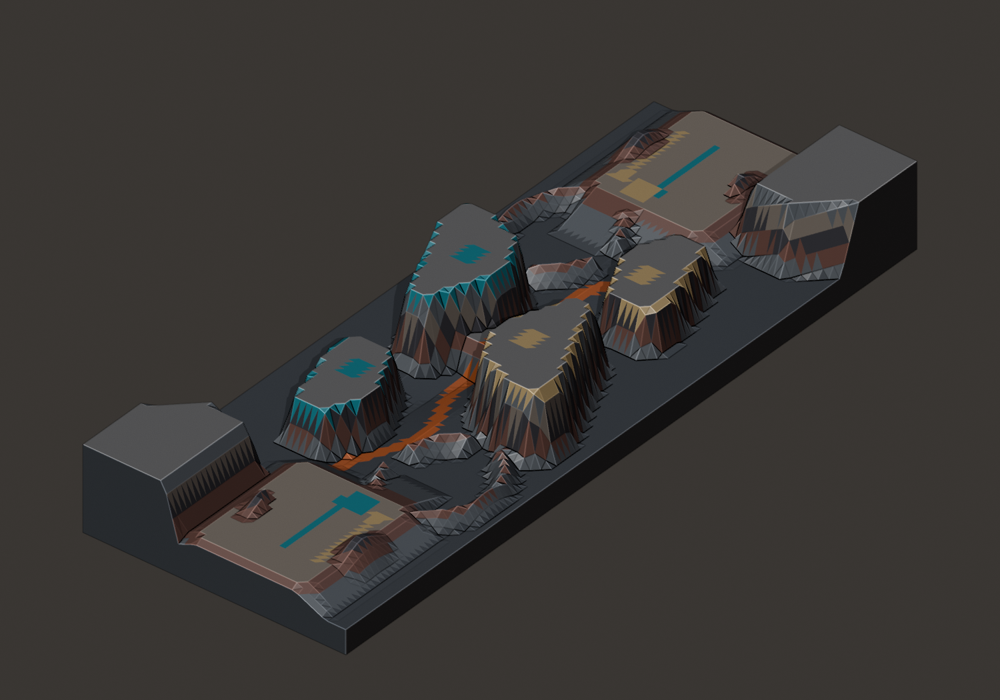
준비 구역 주변 길게 솟은 지형·안뜰·수로를 더한 제작 버전이다.
- 검사 범위: 비행 12경로, 안뜰 보행 출구 4개, 정찰 보행 2개.
- 개선 수치: 양끝 지역에서 출구가 여러 개인 검사 지점의 비율 49.5%.
- 수치의 뜻: 지형을 측정한 결과. 적 공격 회피나 재미를 검증한 점수는 아님.
- 당시 결과: 제작 절차 3.0.0 범위의 최종 통과 기록.
지적된 문제와 처리 상황
제작 중 검사: 초기안에서 지역 갈림길·시야를 가리는 구조가 부족하고, 다음 안에서는 시작 구역 하층 밀도 차이가 허용치를 넘었다.
수정·남은 일: 안뜰·길게 솟은 지형을 추가한 뒤 폭과 경사를 조정했다.제작 중 검사: 여러 지점을 골라 확인한 검사 수치는 좋아도 계획한 안뜰 출구가 안쪽의 높은 바위 지형에 막혔다.
수정·남은 일: 안쪽의 높은 바위 지형을 제거하고 실제 보행 출구의 번호·끝점·연속 충돌 검사를 추가했다.제작 중 검사: 기준 바닥보다 낮게 파인 수로를, 화면에는 보이지 않는 옛 바닥의 충돌 영역이 막았다.
수정·남은 일: 원본 모델은 보존하고 실제 충돌을 판정하는 표면을 보이는 지형과 맞췄다.검토 중 발견: 검토 카메라가 낮은 바위 지형 속에 들어가 있었다.
수정·남은 일: 발을 디딜 수 있는 안뜰 바닥으로 옮겨 화면을 다시 촬영했다.남은 한계: 낮은 일부 목적지는 계단 형태의 평지 중앙에서 가려진다. 주변 10m를 비우는 목표도 일부 미달한다.
수정·남은 일: 가장자리 정찰 위치로 이동하는 검증 동선을 제공했다. 비행 중 빈 공간의 최소 반경은 5.44m로, 필수 기준 5m를 넘었다고 보고됐다.
후속 반영: 도면에 출구가 있는지, 지형 측정에서 연결되는지, 지정한 끝점까지 실제로 이동할 수 있는지를 각각 검사하도록 보강.
6. TIDAL OBSERVATORY — 조수 기록소
6.1 r01 · 모델과 부분 검증이 남아 있는 검토안
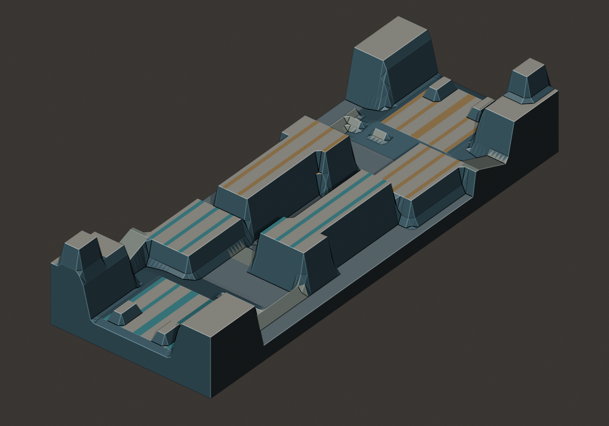
수문을 받치는 벽·측정용 높은 단·중앙 배수 구역·경사진 둑을 사용한 기존 화면 이미지다.
- 구성: 땅과 연결된 두꺼운 구조물, 수로, 수문을 받치는 벽, 경사진 둑.
- 남은 자료: 실제 모델과 후속 개별 검사 파일.
- 상태: 진행 기록은 확인 필요. 최종 완료 보고서와 전체 검사 결과가 없어 미완료로 분류.
지적된 문제와 처리 상황
초기 검사: 첫 번째 시도에서 양끝·중앙 갈림길 부족. 중앙 서로 다른 공간의 종류도 2종으로 3종 기준에 미달했다.
수정·남은 일: 후속 모델·판정 기준에 대한 탐색 검사에서 개선 결과가 기록됐다.후속 시도 검사: 두 번째·세 번째 시도에서도 중앙 갈림길이 부족했고, 세 번째 시도는 중앙 시야를 가리는 정도도 기준에 미달했다.
수정·남은 일: 현재 저장된 탐색 평가는 통과했고, 측정 간격을 바꾼 검사도 통과했다.후속 시도 검사: 여섯 번째 시도에서 계획에 적은 보행 경로 일부와 이동 근거·다른 경로 선택 연결이 기준 미달이었다.
수정·남은 일: 현재 탐색 평가에는 계획에 적은 보행 경로 4개, 다른 경로 선택, 다시 합류하기가 모두 통과로 기록돼 있다.기록·완료 문제: 초기 진행 상태·장소 구상 문서에는 ‘확인 필요’가, 후속 개별 검사에는 ‘통과’가 함께 남아 있다.
수정·남은 일: 최신 전체 완료가 확인되지 않아 ‘검사가 일부 끝난 검토안’으로 분류했다. 사용자 직접 리뷰는 별도 기록에서 확인되지 않았다.
7. TRAM EXCHANGE — 환승 도시
7.1 r01 · 도시 공간 계획안
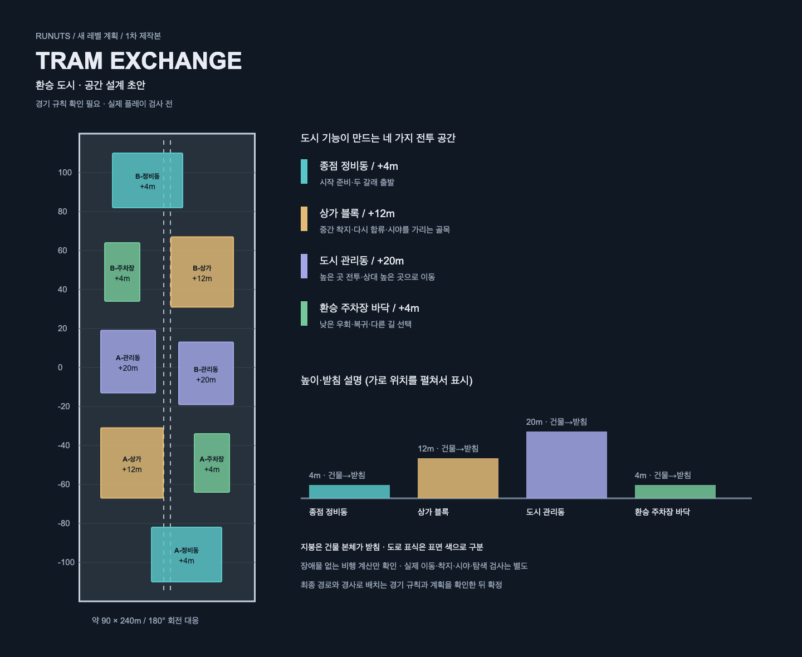
당시 평면·단면 계획 도면이다. 기존 도면의 영어·전문 용어를 쉬운 한국어로 바꾸어 이미지로 저장했다. 공간 배치와 치수는 바꾸지 않았다.
지적된 문제와 처리 상황
초기 이동 연구: 4m 준비 구역에서 20m 옥상으로 82m를 직접 우회하는 검토안의 도착 거리 오차가 약 52.20m였다.
수정·남은 일: 높은 옥상 직접 우회안의 실패를 보존했다. 이후 장애물 없는 상태의 기본 비행 6개·조건 변경 54사례는 통과 기록이 있다.검사 미완료: 경기 규칙을 아직 정하지 않았다. 실제 모델 충돌·5m 여유 공간·화면·최종 탐색·검사 근거 확인은 미실행.
수정·남은 일: 장애물 없는 상태의 비행 결과만으로 최종 지형을 통과시키지 않았다.
7.2 r02 · 공간 복잡도 2배 확장안
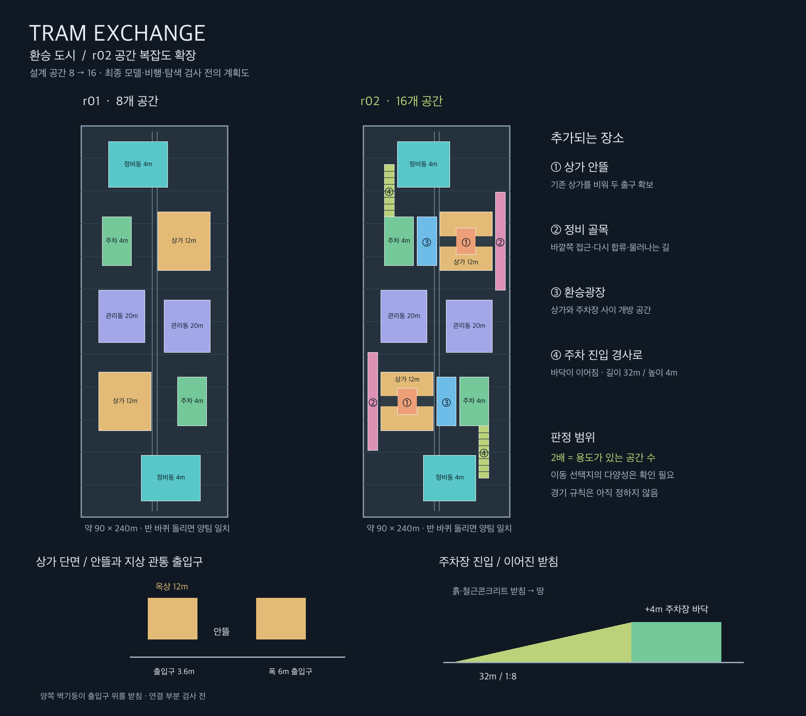
r01과 r02의 공간 구성 비교 도면이다. 기존 도면의 그리기 프로그램과 배치 자료를 사용해 표시 문구만 쉬운 한국어로 바꿨다. 원본 도면은 별도 보존.
지적된 문제와 처리 상황
사용자 후속 요구: 도시 레벨의 복잡도를 기존 초안 대비 2배로 높이도록 요청했다.
수정·남은 일: 용도가 있는 공간 8→16개, 장소 유형 4→8종으로 확장했다. 이 수치는 계획상의 복잡도 정의다.검사 미완료: 경기 규칙과 배치·받침·연결 부분 계획은 확인 필요. 실제 모델·탐색 검사와 카메라를 움직이는 화면 검토도 남아 있다.
수정·남은 일: 초안 수정 완료와 최종 레벨 제작 완료를 구분했다.
7.3 r03 · 3D 검토용 단순 모델
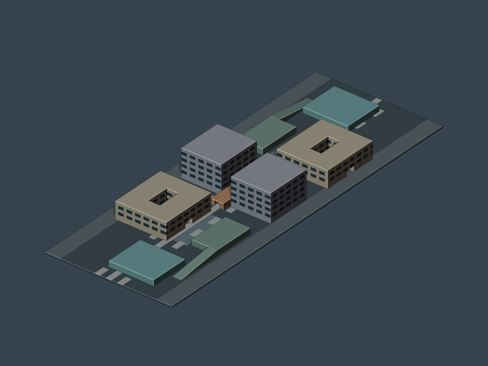
최종 제작 전 필수 검사를 마치지 않은 계획 검토용 단순 모델이다.
지적된 문제와 처리 상황
제작 중 검사: B팀 복제 구조물의 방향만 돌리고 위치는 함께 옮기지 않아 양팀 구조가 겹쳤다.
수정·남은 일: 위치와 방향을 함께 회전하고 모델 형태 내보내기 전 위치·방향을 제대로 반영하도록 수정 기록을 남겼다.탐색 검사: 작업 폴더에 저장된 탐색 평가에서 중앙 시야가 가려진 검사 지점 비율 12.98%가 기준 15.15%에 미달한다.
수정·남은 일: 해당 결과는 기준 미달. 별도 역사 폭을 8m로 바꾼 시도는 확인 필요 상태로 남아 있다.근거 불일치: 보행 결과 파일은 통과 상태지만 탐색 평가에서는 계획에 적은 보행 항목이 기준 미달이다. 두 검사에 사용한 모델의 내용 확인값도 서로 다르다.
수정·남은 일: 같은 모델에 대한 전체 통과 결과로 합칠 수 없다. 현재 모델로 다시 검사한 근거가 필요하다.검사 미완료: 비행 경로 연결은 확인 필요, 생성 전 배치·받침·연결 부분 계획도 확인 필요.
수정·남은 일: 완료본으로 분류하지 않는다.
8. VOLCANIC FORGE — 화산 주조소
8.1 r01 · 독립 검증을 적용 중인 계획 초안
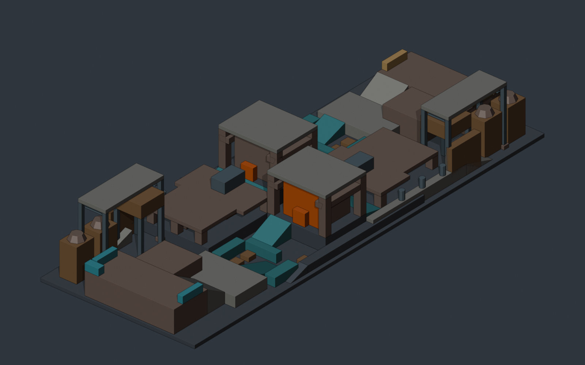
계획을 검토하기 위해 만든 초안이다. 아래 독립 진단은 특정 이전 모델 형태에 대한 기록이므로 이 이미지의 모든 위치에 그대로 대응한다고 주장하지 않는다.
- 구성: 물자 반입장, 주조대, 용광로, 광석 투입부, 냉각 안뜰, 정비 통로.
- 목표: SKY CARGO r02 수준의 다층 구성과 풍부함 유지.
- 적용 절차: 제작 절차 3.3.0. 제작자와 다른 AI의 독립 검토 적용 중.
- 진행 상태: 미완료·확인 필요. 기록상 다음 단계는 ‘장소와 특징 설계’.
- 미확정 자료: 최종 모델, 개별 구조물, 배치 버전. 검토자 한 명의 통과만으로 단계 전체 완료를 선언하지 않음.
지적된 문제와 처리 상황
탐색 진단: 출구가 여러 개인 검사 지점의 비율이 남측 34.19%, 중앙 28.63%, 북측 34.19%로 각각 기준에 미달했다.
수정·남은 일: 검토 중 모델 형태가 바뀌었으므로 그 수치를 최신 초안의 값으로 사용할 수 없다. 새 측정이 필요하다.구조·접근: 광석 투입부가 주조 경사로와 작업 앞마당을 막고, 경사로 상단 일부는 주조대에 연결되지 않았다.
수정·남은 일: 투입 기능과 큰 구조물을 유지하면서 통로·받침·착지 지점의 연결을 재설계하도록 제안했다.구조·접근: 용광로 접근 경사로 발치가 냉각 구역을 나누는 벽 내부에 묻혀 있었다.
수정·남은 일: 실제 출입구 또는 접근 위치의 재설계가 필요하다고 지적했다.연결: 용광로 바닥 정비 통로가 분리된 띠로 나뉘고, 돌아오는 경사로가 상대 주조 구조 안에 숨었다.
수정·남은 일: 작은 출입구는 정밀 검사 필요. ‘지상 복귀’라는 문서 설명과 실제 높이·기능을 맞춰야 한다.연결: 외곽 복귀용 발판에 4→6m의 2m 높이 차이가 있고 중앙 낮은 정비 틈은 양끝이 막혔다.
수정·남은 일: 아래가 받쳐진 경사 연결과 실제 출입구를 검증하거나 해당 통로 역할을 다시 정의해야 한다.일부 수정·검사 미완료: 계획에 적은 보행 시작·종료 좌표가 구조물 속에 있는 문제는 검토 중 좌표·경사로를 수정했다.
수정·남은 일: 수정된 끝점에 대한 새 0.1m 정밀 검사와 정식 단계 통과는 별도 의무로 남았다.위 지적의 범위: 독립 예비 진단 당시의 모델.
후속 자료: 계획 1~8차의 검사 기록 존재.
남은 확인: 모든 지적의 해결을 확인한 전체 검사 결과는 없음. 현재도 남은 결함인지 각각 재확인 필요.
9. 문제를 통해 보강한 제작 기준
- 표면·구조·배치 문제 → 제작 전 계획과 실제 화면 검사 강화. SKY CARGO r02 리뷰를 반영해 배치 이유, 받침, 연결 부분과 움직이는 화면을 3~8단계에서 확인.
- 갈림길·복귀로 부족 → 지역별 이동 선택지 검사 추가. VOLCANIC BASIN r03 재평가를 반영해 다른 비행 목적지, 복귀·재합류, 한곳으로 몰리는 길 검사.
- 막힌 출구·숨은 바닥 충돌 → 지정 경로의 실제 이동 검사 추가. r04 사례를 반영해 보행 시작·끝점과 연속 충돌, 보이는 면과 충돌 판정면의 일치 확인.
- 구조물 양 유지 요구 → 계획과 실제 모델 모두 기준과 비교. 3단계에서 SKY CARGO r02 수준의 풍부함을 계획하고 7단계에서 지역별 실제 수치 비교.
- 독립 검증 요구 → 실제로 다른 AI에 검토 배정. 모든 단계에서 역할, 범위, 실행 기록, 사용 자료와 앞단계 연결 보관.
- 잘못된 통과·오래된 상태·불필요한 재검사 → 공통 관리 절차 정비. 제작 절차 3.3.0에서 결과 파일 통일, 필수 자료 확인, 최신 전체 검사와 버전 분리 적용.
마지막 항목은 제작 시스템 자체를 고친 기록. 새 레벨의 제작 완료 여부는 해당 레벨의 검사 결과로 판단한다.
10. 노션으로 가져오기
- 이 공개 사이트에는 사이트 본문과 화면에 표시되는 이미지만 포함한다.
- 노션의
설정 → 가져오기에서 ZIP 가져오기 선택. - 가져온 문서에서 이미지 확인. 빠진 이미지가 있으면 압축 파일의
assets/에서 같은 이름의 이미지 추가.
- 편집 원본: 별도 Markdown 문서 제공.
- 확인 범위: 이 컴퓨터에서 문서와 이미지 연결 확인. 실제 노션 가져오기는 미실행.
- 사용 안내: 노션 공식 가져오기 안내
11. 참고한 자료
- 전체 제작 절차: 최종 시스템 안내, 정식 설계 절차, 단계별 검사 프로그램.
- 품질 기준: 제작 품질, 탐색·지형 다양성, 구조물 양 유지 기준.
- 독립 검토와 완료 처리: 서브에이전트 운영 절차, 공통 단계 관리 도구, 절차 변경 기록.
- 폭파광 동선: 제공된 이동 보고서, 이동 계산 프로그램, SKY CARGO r02 검사 프로그램과 저장된 비행 경로.
- 레벨별 문제: 각 제작 버전의 사용자 리뷰, 진행 상태, 검사 결과, 최종 보고서와 원본 캡처.
상세 원본 경로와 파일 내용 확인값은 공개 사이트에 포함하지 않고 작업 폴더에 보관한다.